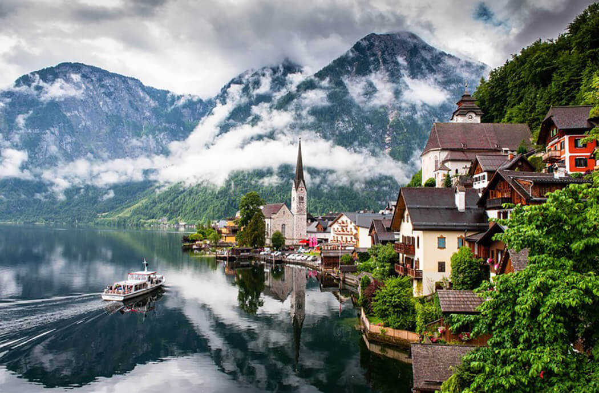
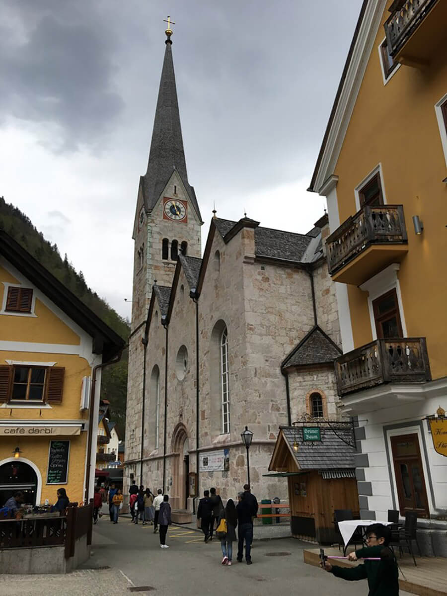
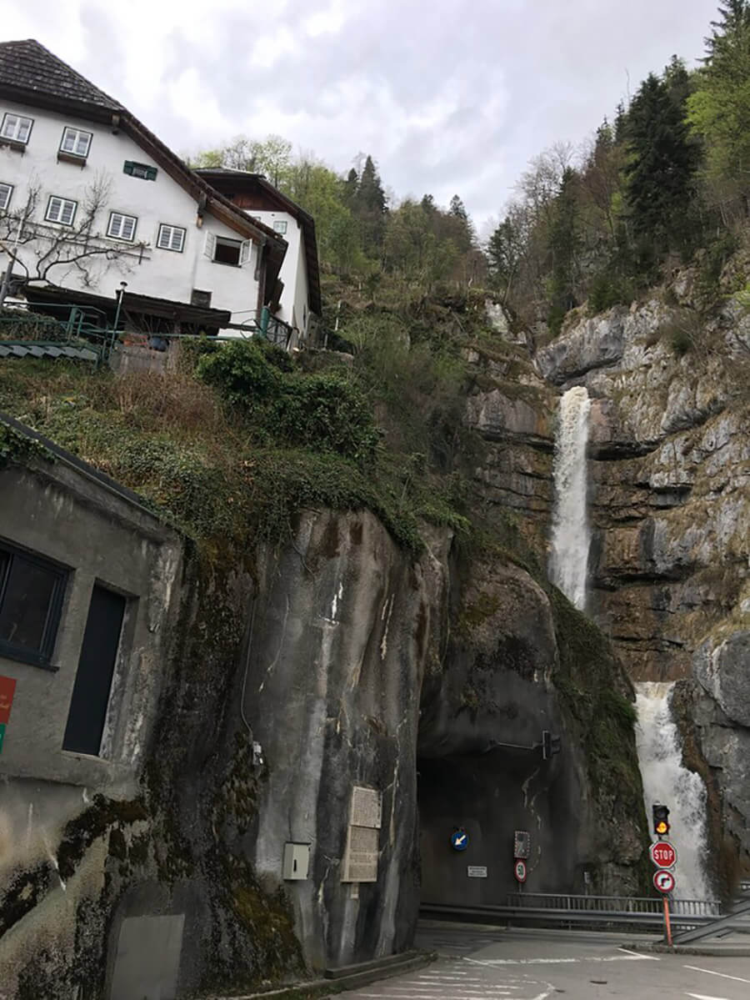

ДЕРЕВНЯ ХАЛЛЬШТАТТ
Когда дело доходит до сказочных городов, деревня Халльштатт – вне конкуренции. Халльштатт (нем. Hallstatt) расположен в заснеженных горах Верхней Австрии. Эта деревушка на берегу озера выглядит так, как будто ее придумал Уолт Дисней.

В небольшой деревушке, которая является прототипом королевства Эренделл в диснеевском мультфильме "Холодное сердце", проживает всего около 780 человек. При этом число туристов, которые посещают Халльштатт в день, равно 10000 (по данным на 2019 год). Для сравнения, в 2009 году их было всего 100.
Путешественников привлекает не только связь Гальштата с диснеевской историей, но и местные живописные пейзажи.

Еще 100 лет назад практически никто, кроме купцов соли, не знал о его существовании, и добираться сюда нужно было по диким лесам.
Сам городок расположен на небольшом участке земли между горами и Халльштаттским озером.
Еще в 5 веке до н.э. Халльштатт славился добычей соли – соль добывалась в промышленных масштабах, что обеспечило всему региону финансовое благополучие и процветание. Сегодня соляные шахты являются одной из популярнейших достопримечательностей города.
Для туристов проводятся экскурсии (на английском и немецком языках), в ходе которых можно почувствовать себя добытчиком соли.

Чтобы насладиться панорамой города с высоты 360 метров, то посещение смотровой площадки обязательно. Находится площадка по пути к соляным шахтам. Добраться можно как на фуникулере, так и пешком.


Смотровая Hallstatt Sky Walk - это бетонная площадка в виде носа корабля. Отсюда открываются захватывающие виды на все окрестности и городок.

Еще одна достопримечательность Халльштатта - часовня Святого Михаила (Michaelskapelle), рядом с ней находится маленькое городское кладбище. Оно необычное. Так как в городе очень лимитировано количество земли еще со средних веков. Поэтому с 15 века тело умершего находится в могиле только 10 лет.

После этого тело умершего достают, отбеливают кости на солнце, потом специальный человек подписывает череп и украшает его растительным орнаментом или символами его профессии. И размещают останки уже в костнице в капелле, сейчас там более 1200 черепов.

Сейчас эта традиция уходит в прошлое в связи с распространением процедуры кремации, тем не менее, по завещанию, кости гражданина города могут выставить в церкви.

Евангелическая церковь (Evangelische Kirche) - это та самая церковь, которая красуется на всех открытках и картинах. Построенная в 18 веке, церковь действует и по сей день. Различные концерты и другие культурные мероприятия проводятся в этой церкви

А еще можете увидеть водопад Вальдбахштруб, который протекает через весь город.
